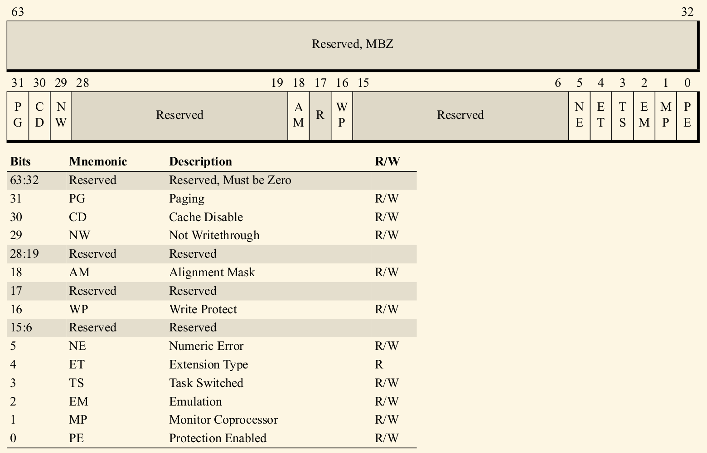
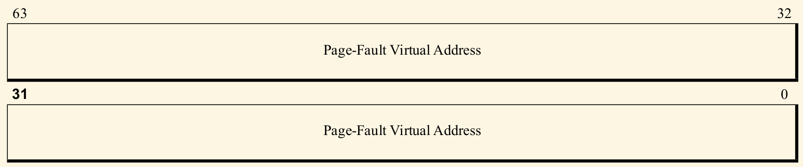
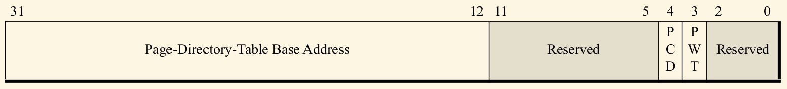
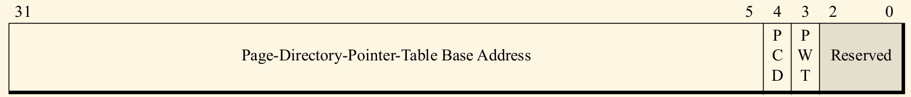
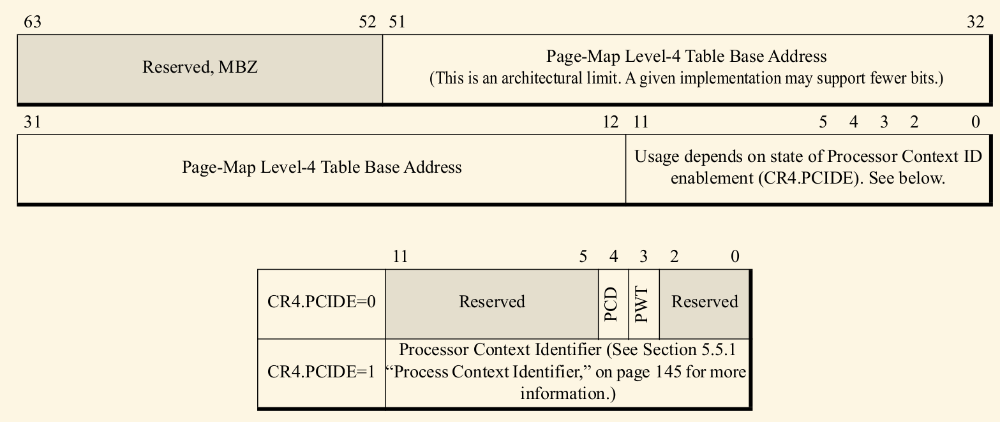
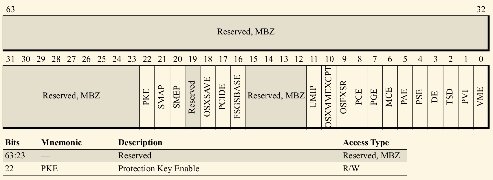
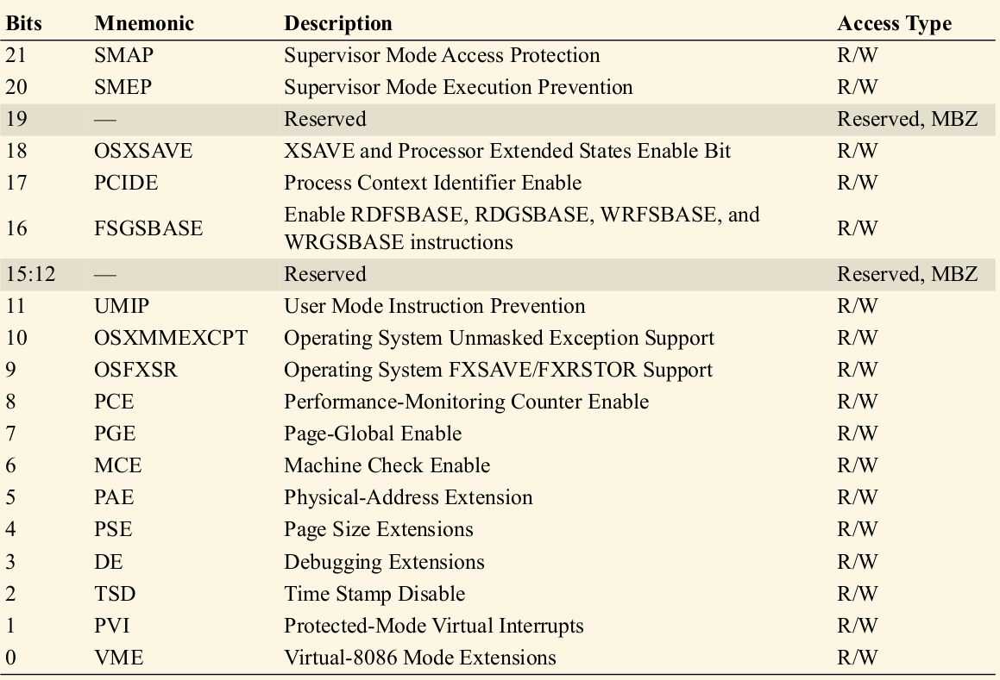

AMD64(X86-64)系统资源
Table of Contents
本文介绍AMD64架构下的系统寄存器, 这些寄存器可以说控制了整个AMD64机器的状态和功能. 当然这些介绍绝大部分同样也适合Intel系列的64位处理器.
1 系统控制寄存器
AMD64处理器包含常见的下列系统寄存器:
- CR0: 提供处理器操作模式以及一些处理器特点的控制.
- CR2: 由分页机制所使用. 当page-fault异常发生时, 就会被处理器填以page-fault的虚拟地址.
- CR3: 由分页机制所使用. 这个寄存器存有最高级别的页表, 对指定的页表, 它也会包含一些对它的缓存控制.
- CR4: 控制着操作模式各种特点.
- CR8: AMD64架构特有的, 在64-bit模式下使用REX前缀来访问. CR8可以使得外部中断具有优先级, 也叫做TPR寄存器(Task-Priority Register).
- RFLAGS: 该寄存器包含了处理器的状态和处理器控制域. 这些状态和控制域主要用来管理Virtual-8086模式, 硬件多任务以及中断.
- EFER: 对于不由CR0-CR0管理的处理器特点, 这个寄存器会包含这些特点的状态和有无.
在legacy mode下, 所有的控制寄存器以及RFLAGS都是32-bit宽. EFER在所有模式下都是64-bit. 而AMD64架构下, 所有的32-bit控制寄存器都被扩展到了64-bit. 在64-bit模式下, 使用MOV CRn指令读写这些控制寄存器都会操作在所有64-bit范围上(如果指令有prefix的话会被忽略). 而在兼容和legacy模式下, 往控制寄存器里写只会把低32位填充有效数据, 高32位会被填0. 读这些寄存器就只会返回低32位的数据了.
在64-bit模式下, CR0和CR4的高32位是预留的并且只能写入0, 写入1的话会导致general-protection异常.
1.1 CR0寄存器
下面的图展示了CR0寄存器，legacy CR0寄存器和下图中的低32位一样。

Figure 1: CR0寄存器
下面简单介绍下各bit域的作用：
- Procted-Mode Enable(PE) Bit。比特0，这个比特主要用来控制处理器是否运行在保护模式，为1代表在保护模式，为0不是保护模式。如果处理器在保护模式下运行的话，分段保护机制也是打开的。
Monitor Coprocessor(MP) Bit。比特1，对于WAIT/FWAIT指令的执行，有可能会引起 device-not-available异常，是否会，这主要由Monitor Coprocessor比特和task-switched control bit（CR0.TS）来决定：
- 如果Monitor Coprocessor比特和task-switched control比特都设置为1的话（CR0.MP = 1以及 CR0.TS = 1），执行WAIT/FWAIT指令就会触发device-not-available异常。
- 如果CR0.MP或CR0.TS中的任意一个设置为0，WAIT/FWAIT指令的执行不会触发异常。
对于支持x87指令的处理器，软件都应该将MP设置为1，这样在任务切换时，CR0.TS就可以完全自主的控制何时可以保存x87指令的上下文。
- Emulate Coprocessor(EM) Bit。比特2，如果这个比特被设置为1，所有x87指令的执行都会引起device-not-available异常。同样的，这样的设置也会导致除了FXSAVE和FXRSTOR之外的其它多媒体指令的执行引起invalid-opcode异常。而异常句柄函数可以模拟这些指令的作用。
- Task Switched(TS) Bit。比特3，TS = 1时，尝试执行x87或多媒体指令时都会引起device-not-available异常，软件可以利用这一机制来达到一种优化效果，就是只有必要的时候保存x87和多媒体指令的上下文。
- Extension Type (ET) Bit。比特4，早期x86寄存器会用到。
- Numeric Error(NE) Bit。指明是内部还是外部控制x87的浮点异常，对于软件来说，推荐将它设置为1，这样性能有一定优化。
- Write Protect(WP) Bit。控制着超级用户是否能写read-only的页面，1的话意味着不能写，0可以写。
- Alignment Check(AM) Bit。Bit 18。通过AM比特和RFLAGS.AC一起决定是否自动检查对齐，当CPL=3时，对于未对齐的内存访问会引起AC异常。
- Not Writethrough(NW) Bit。Bit 29，忽略了，仅在legacy mode中使用。
- Cache Disable(CD) Bit。比特30，CD=0时，内部缓存开启。CD=1时，数据和指令不会加载到内部缓
存，除了以下两种情况：
- 读命中时，就会从内部cache中返回数据并且报告cache命中。
- 写命中时，就会使得数据写入到下一级存储中，报告命中且无效cache。
- Pageing Enable(PG)比特。比特31，为1使能页翻译，但同时CR0.PE也要为1，也就是在保护模式下。
- Reserved Bits。比特28：19，17，15：6以及63：32是保留比特。对于这些比特的操作应该和前一次读出来的值相同。而在long mode下，63：32比特必须保持0。
1.2 CR2和CR3寄存器
CR2(page-fault linear address)和CR3(page-translateion-table base address)主要用于页翻译机 制。CR3用来指出最高级别的页翻译表，如下的图：

Figure 2: legacy mode的CR2寄存器

Figure 3: long mode的CR2寄存器

Figure 4: legacy mode的CR3寄存器（non-pae）

Figure 5: legacy mode的CR3寄存器（pae）

Figure 6: long mode的CR3寄存器
在后面介绍分页机制时还会更详细的介绍这两个寄存器。
1.3 CR4寄存器
下图表示了CR4寄存器的内容：

Figure 7: cr4寄存器

Figure 8: cr4寄存器
下面挑几个简单介绍下这些bit所控制的作用，其它具体的可以参考手册：
- Time-Stamp Disable(TSD)：Bit 2，控制哪个权限可以访问time-stamp counter，为0时代表任何权限的指令都可以访问（即执行rdtsc或rdtscp指令），为1时，只有在0权限级的软件才能执行rdtsc或rdtscp指令。
- Page-Size Extensions(PSE)：Bit 4，设置为1表示开启4-Mbyte物理页面。
- Machine-Check Enable(MCE)：Bit 6，设为1表示开启机器检查异常。
- Page-Global Enable(PGE)：Bit 7，页翻译机制开启时，通过使得某些页翻译对所有的任务和函数都是全局的（global），系统软件的性能可以得到提升。